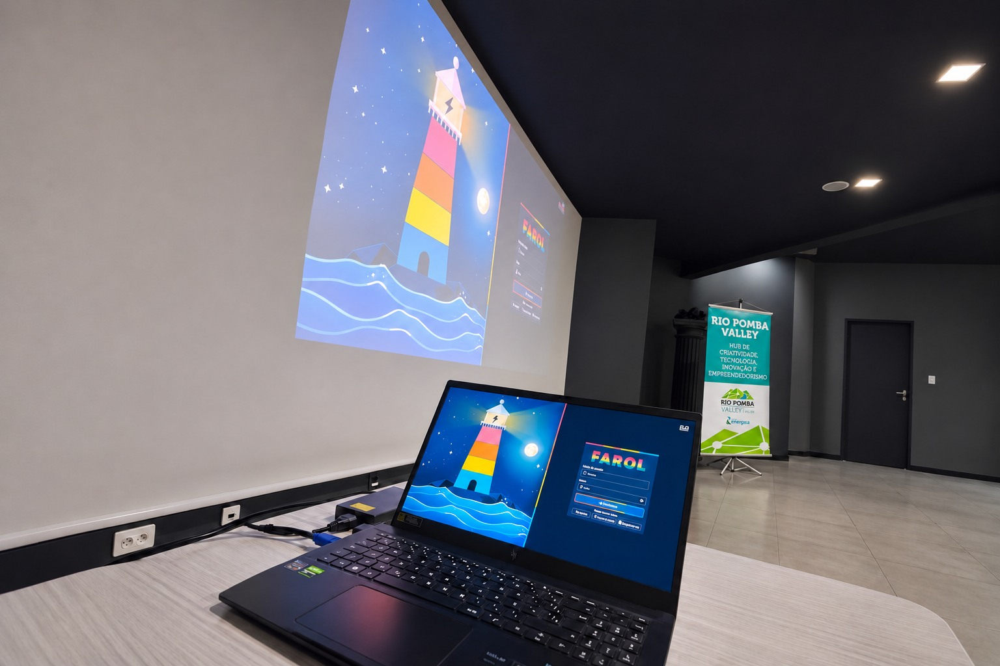

01 / Operação e infraestrutura
Farol
Prioridades claras para decisões melhores. Um sistema que organiza ordens de serviço de manutenção da rede elétrica por cidade, com critérios de pontuação e acompanhamento de equipes.
Projeto em coautoria com Andre Millani, Alexandre Quintão e Erick Torres. Apresentado durante a Maratona de IA.